Where to buy
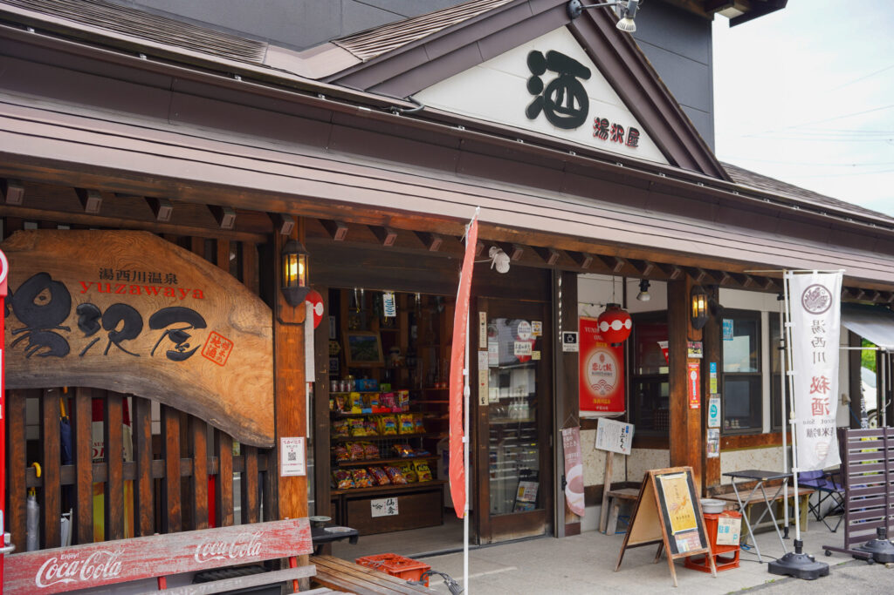
shop-yuzawaya-saketen.jpg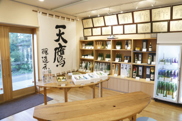
shop-hoshidaya-saketen.jpg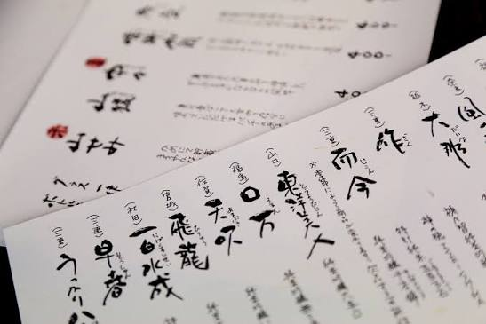
shop-mashidaya.jpg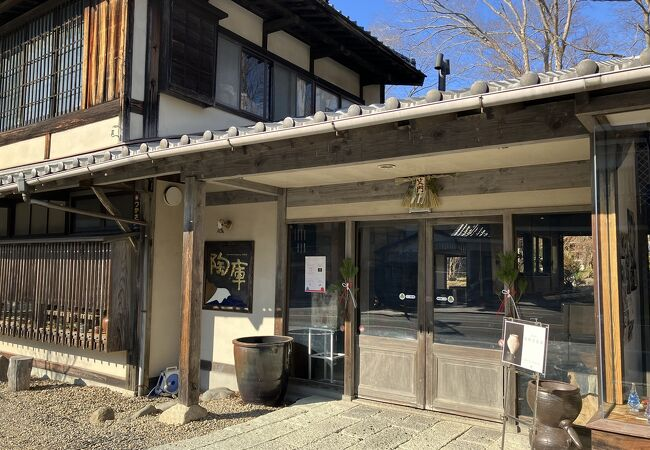
shop-toko-mashiko.jpg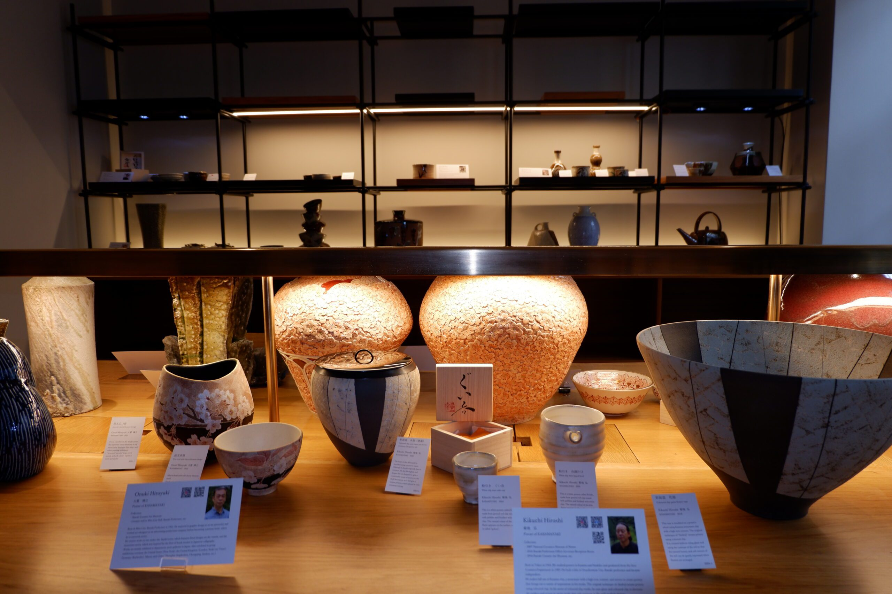
shop-zengo-yamani.jpg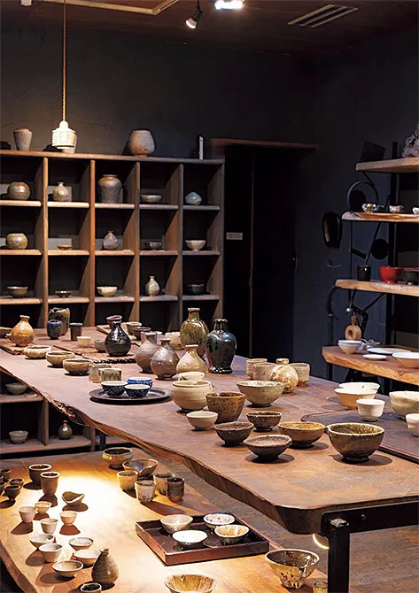
shop-moegi-mashiko.jpg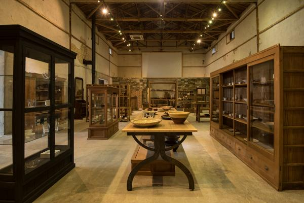
shop-pejite-mashiko.jpg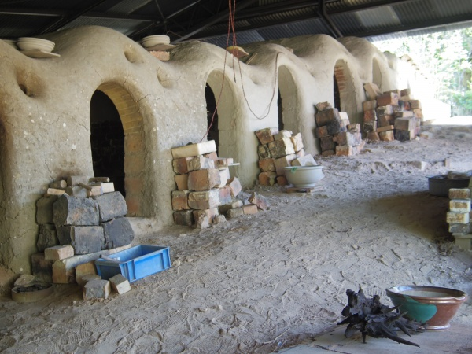
shop-taiseigama.jpg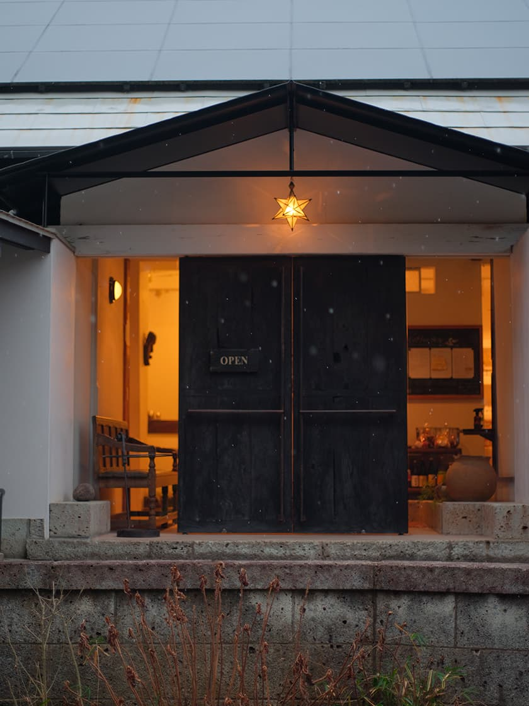
shop-starnet-mashiko.jpg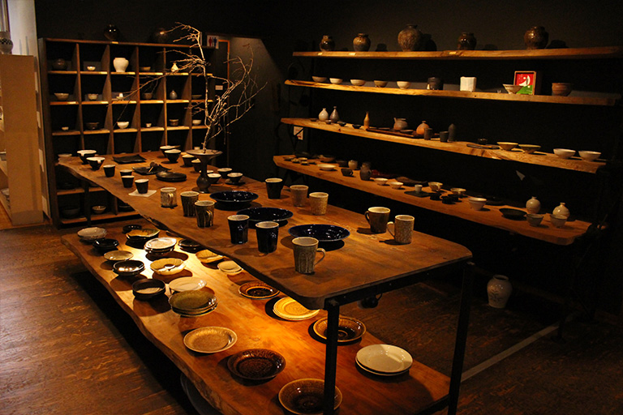
shop-toko-cover.jpgTōkō
- Location
- Jōnaizaka, Mashiko, Haga-gun
- Opened
- 1974, in a warehouse from 1898
- Hours
- 10:00–18:00
- Sells
- Work by 40+ potters, plus other Tochigi crafts
- Sake cups
- A section of their own, in store and online
- Ships
- Japan and overseas
- English
- Limited, but the objects speak
- Cards
- Yes
First impressions
The shop is in an old fertiliser merchant's warehouse built out of ōya stone, the same pale volcanic rock the sake warehouses in this prefecture are made of. The front room is bright. The stone room behind it is cooler and quieter, and that's where the good pieces are.
They opened in 1974 and have run over a thousand shows since. The exhibition changes every couple of weeks, so it's worth checking what's on before you go.
Nothing's behind glass. Everything is priced and on open shelves, and you're meant to pick it up.
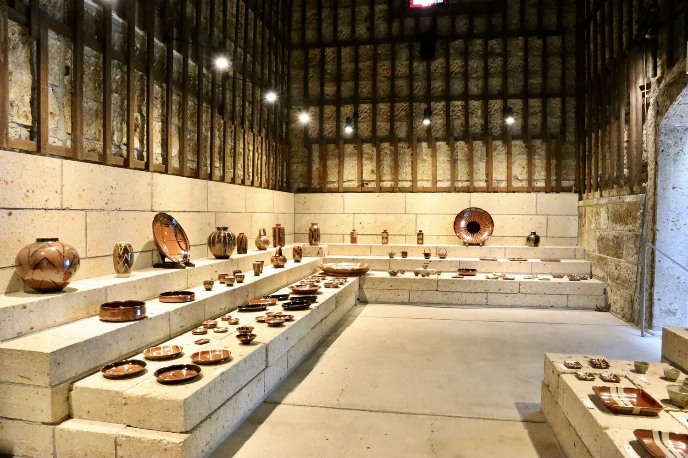
shop-toko-stone-room.jpgWhat to buy
Around forty potters, nearly all from Mashiko. If you're only buying one thing, make it a guinomi — the small cup you drink sake from.
Ordering from abroad
They have an online shop with sake cups as their own category. Not everything in the building is listed — message them if you saw something in the shop and can't find it.
They pack pottery properly, which is the thing that actually matters. Allow two to three weeks.
Come here before you visit any kilns. You'll see forty potters in half an hour and work out whose work you actually want.
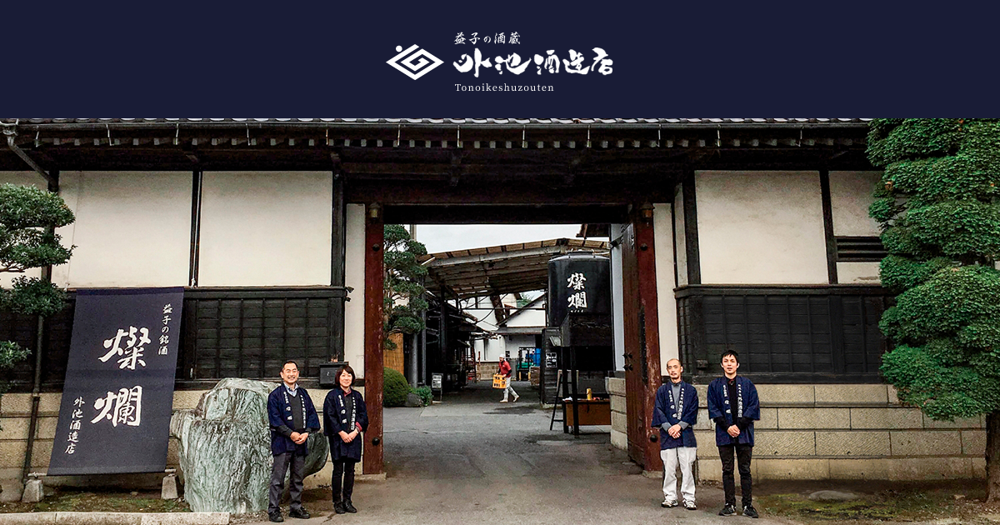
brewery-tonoike.jpg